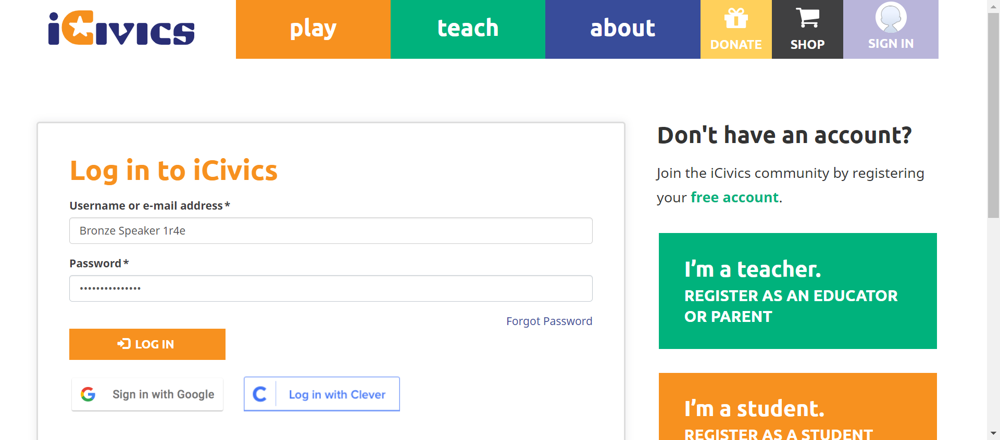
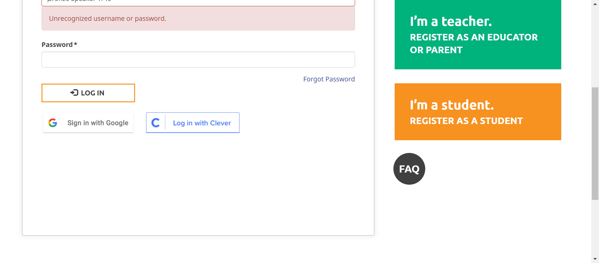
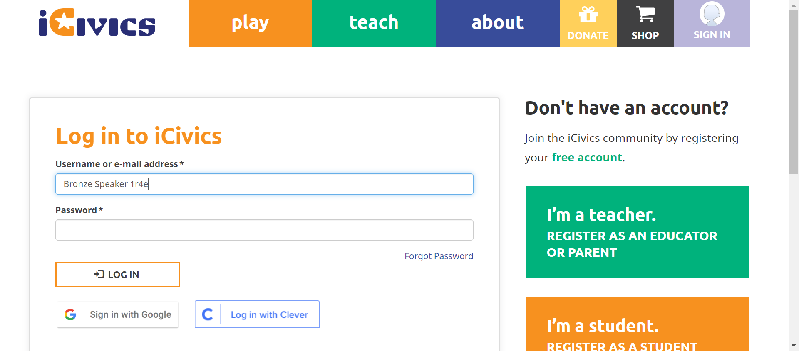
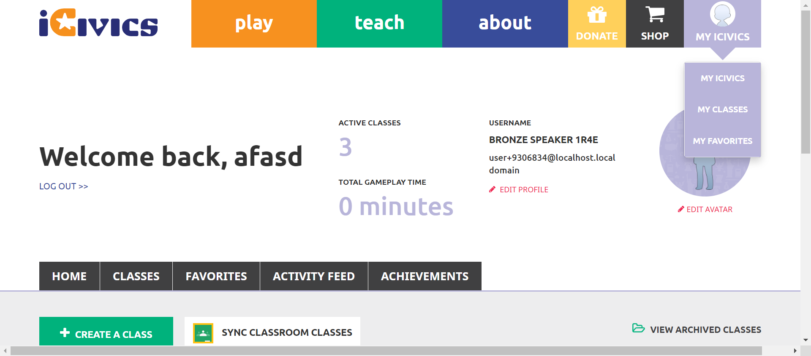
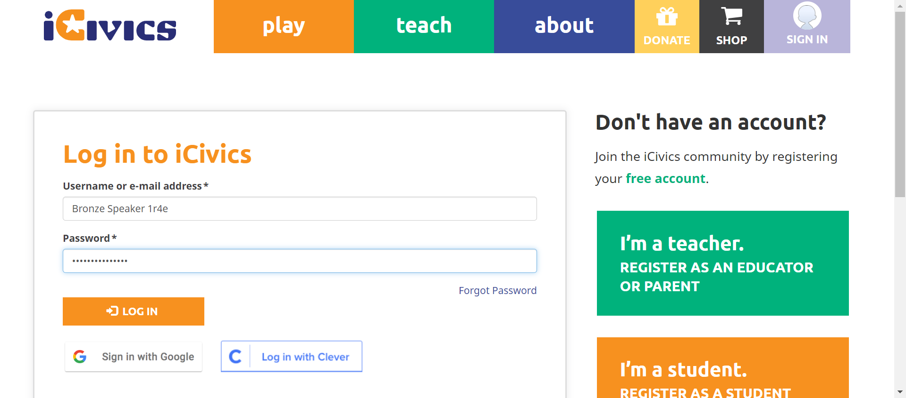
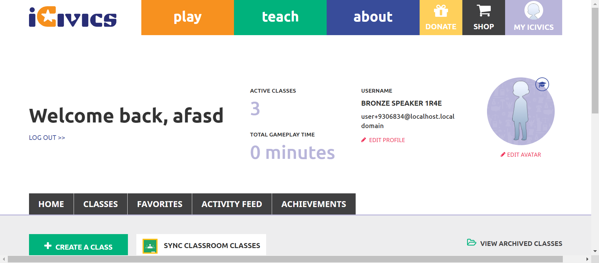
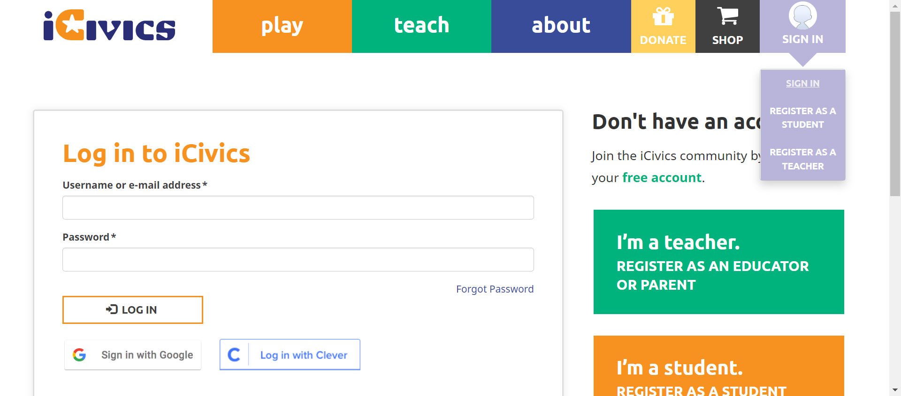
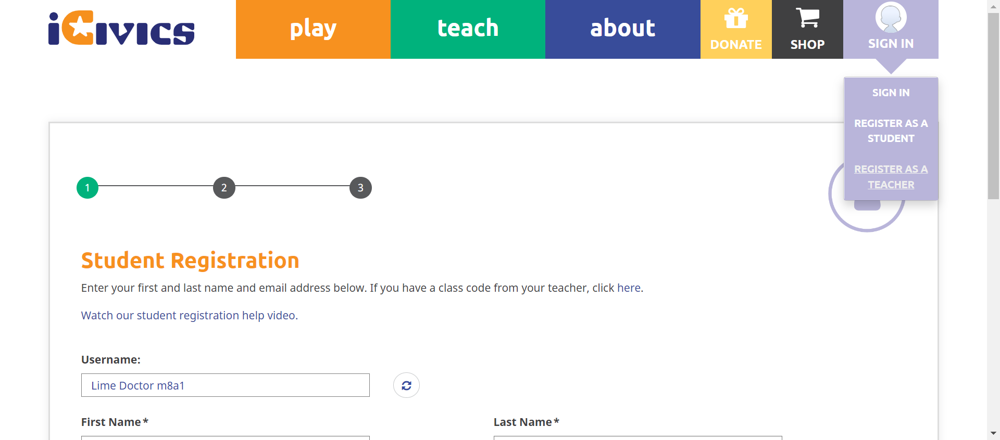
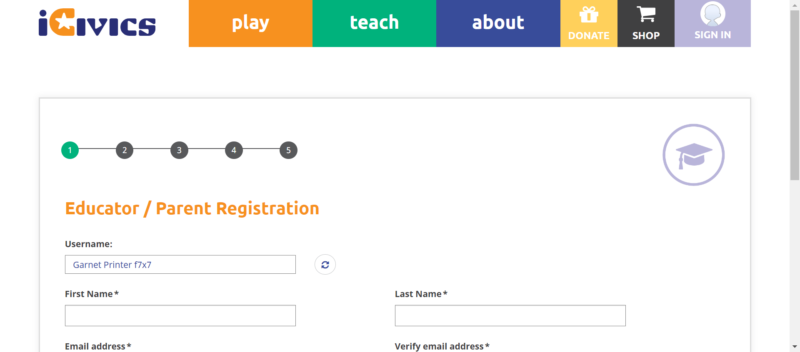
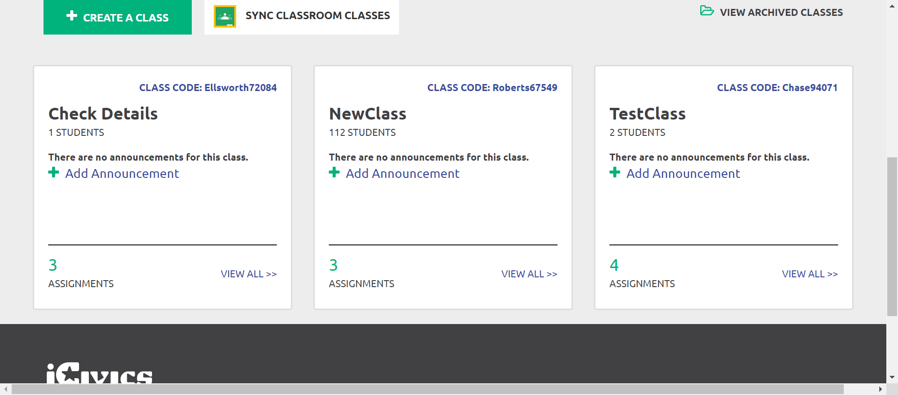

Tests
33 test(s) passed
3 test(s) failed, 0 others
Steps
179 step(s) passed
3 step(s) failed, 0 others
Tests
-
HomepageHeaderplay Jun 13, 2022 01:52:00 PM passJun 13, 2022 01:52:00 PM Jun 13, 2022 01:52:11 PM 0h 0m 11s+0ms
-
C42 - When you select Sign In / My iCivics again while the submenu is open, does the submenu close?
Jun 13, 2022 08:46:55 PM 0h 33m 52s+314ms passStatus Timestamp Details check_circle 1:52:10 PM signinbutton submenu is display 
check_circle 1:52:11 PM signinbutton submenu is Close
-
-
HomepageHeaderplay Jun 13, 2022 02:12:55 PM passJun 13, 2022 02:12:55 PM Jun 13, 2022 02:13:06 PM 0h 0m 11s+0ms
-
C42 - When you select Sign In / My iCivics again while the submenu is open, does the submenu close?
Jun 13, 2022 08:46:55 PM 0h 33m 52s+330ms passStatus Timestamp Details check_circle 2:13:05 PM signinbutton submenu is display 
check_circle 2:13:06 PM signinbutton submenu is Close on clicking again 
-
-
HomepageHeaderplay Jun 13, 2022 02:28:09 PM failJun 13, 2022 02:28:09 PM Jun 13, 2022 02:28:52 PM 0h 0m 43s+0ms
-
C42 - When you select Sign In / My iCivics again while the submenu is open, does the submenu close?
Jun 13, 2022 08:46:55 PM 0h 33m 52s+338ms failStatus Timestamp Details check_circle 2:28:21 PM signinbutton submenu is display 
check_circle 2:28:21 PM signinbutton submenu is Close on clicking again 
cancel 2:28:52 PM The Element with locator:XPATH&(//a[@title='MY ICIVICS']//span)[3] Not Found with value: (//a[@title='MY ICIVICS']//span)[3]
-
-
HomepageHeaderplay Jun 13, 2022 02:35:16 PM failJun 13, 2022 02:35:16 PM Jun 13, 2022 02:35:58 PM 0h 0m 42s+0ms
-
C42 - When you select Sign In / My iCivics again while the submenu is open, does the submenu close?
Jun 13, 2022 08:46:55 PM 0h 33m 52s+343ms failStatus Timestamp Details check_circle 2:35:27 PM signinbutton submenu is display 
check_circle 2:35:28 PM signinbutton submenu is Close on clicking again 
cancel 2:35:58 PM The Element with locator:XPATH&(//a[@title='MY ICIVICS']//span)[3] Not Found with value: (//a[@title='MY ICIVICS']//span)[3] 
-
-
HomepageHeaderplay Jun 13, 2022 02:42:42 PM passJun 13, 2022 02:42:42 PM Jun 13, 2022 02:43:41 PM 0h 0m 59s+0ms
-
C42 - When you select Sign In / My iCivics again while the submenu is open, does the submenu close?
Jun 13, 2022 08:46:55 PM 0h 33m 52s+348ms passStatus Timestamp Details check_circle 2:43:16 PM signinbutton submenu is display check_circle 2:43:16 PM signinbutton submenu is Close on clicking again 
check_circle 2:43:17 PM The Element SIGN IN clicked 
check_circle 2:43:20 PM The Element SIGN IN clicked check_circle 2:43:20 PM The Element LOG IN clicked check_circle 2:43:41 PM myicivics button is clicked and submenu is close 
check_circle 2:43:41 PM myicivicsbutton submenu is Close on clicking again 
-
-
HomepageHeaderplay Jun 13, 2022 06:25:28 PM failJun 13, 2022 06:25:28 PM Jun 13, 2022 06:26:13 PM 0h 0m 45s+0ms
-
C34 - If you are signed in, do you see a My iCivics button instead of Sign In?
Jun 13, 2022 08:46:55 PM 0h 33m 52s+355ms failStatus Timestamp Details check_circle 6:25:40 PM The Element LOG IN clicked cancel 6:26:13 PM The Element with locator:XPATH&(//a[@title='MY ICIVICS'])[2] Not Found with value: (//a[@title='MY ICIVICS'])[2]
-
-
HomepageHeaderplay Jun 13, 2022 06:33:37 PM passJun 13, 2022 06:33:37 PM Jun 13, 2022 06:34:13 PM 0h 0m 36s+0ms
-
C34 - If you are signed in, do you see a My iCivics button instead of Sign In?
Jun 13, 2022 08:46:55 PM 0h 33m 52s+362ms passStatus Timestamp Details check_circle 6:33:48 PM The Element SIGN IN clicked 
check_circle 6:33:50 PM The Element SIGN IN clicked check_circle 6:34:10 PM The Element LOG IN clicked check_circle 6:34:13 PM Myicivicsbutton is display after login instead of signin button 
-
-
HomepageHeaderplay Jun 13, 2022 06:56:25 PM passJun 13, 2022 06:56:25 PM Jun 13, 2022 06:57:01 PM 0h 0m 36s+0ms
-
C36 - When you select Sign In/My iCivics, does a submenu open below the button?
Jun 13, 2022 08:46:55 PM 0h 33m 52s+417ms passStatus Timestamp Details check_circle 6:56:35 PM The Element SIGN IN clicked 
check_circle 6:56:37 PM The Element SIGN IN clicked 
check_circle 6:56:37 PM The Data :Bronze Speaker 1r4e entered Successfully check_circle 6:56:38 PM The Data :i898qrCiPK9Hwgb entered Successfully check_circle 6:56:58 PM The Element LOG IN clicked check_circle 6:57:01 PM myicivics button is clicked and submenu is close 
-
-
HomepageHeaderplay Jun 13, 2022 06:58:08 PM passJun 13, 2022 06:58:08 PM Jun 13, 2022 06:58:44 PM 0h 0m 36s+0ms
-
C36 - When you select Sign In/My iCivics, does a submenu open below the button?
Jun 13, 2022 08:46:55 PM 0h 33m 52s+421ms passStatus Timestamp Details check_circle 6:58:18 PM The Element SIGN IN clicked 
check_circle 6:58:20 PM The Element SIGN IN clicked check_circle 6:58:21 PM The Data :Bronze Speaker 1r4e entered Successfully check_circle 6:58:21 PM The Data :i898qrCiPK9Hwgb entered Successfully check_circle 6:58:41 PM The Element LOG IN clicked 
check_circle 6:58:44 PM myicivics button is clicked and submenu is display 
-
-
HomepageHeaderplay Jun 13, 2022 07:20:35 PM passJun 13, 2022 07:20:35 PM Jun 13, 2022 07:21:14 PM 0h 0m 39s+0ms
-
C37 - When you select Sign In, do you see links to Sign In, Register As a Student, Register As A Teacher in the submenu?
Jun 13, 2022 08:46:55 PM 0h 33m 52s+431ms passStatus Timestamp Details check_circle 7:20:46 PM The Element SIGN IN clicked 
check_circle 7:20:48 PM The Element SIGN IN clicked check_circle 7:20:48 PM The Data :Bronze Speaker 1r4e entered Successfully 
check_circle 7:20:48 PM The Data :i898qrCiPK9Hwgb entered Successfully check_circle 7:21:10 PM The Element LOG IN clicked 
check_circle 7:21:13 PM myicivics button is clicked and submenu is display 
check_circle 7:21:13 PM myicivics submenu count is 3 
check_circle 7:21:13 PM myicivcs submenu is MY ICIVICS 
check_circle 7:21:13 PM myicivcs submenu is MY CLASSES 
check_circle 7:21:14 PM myicivcs submenu is MY FAVORITES 
-
-
HomepageHeaderplay Jun 13, 2022 07:31:21 PM passJun 13, 2022 07:31:21 PM Jun 13, 2022 07:33:47 PM 0h 2m 26s+0ms
-
C37 - When you select Sign In, do you see links to Sign In, Register As a Student, Register As A Teacher in the submenu?
Jun 13, 2022 08:46:55 PM 0h 33m 52s+438ms passStatus Timestamp Details check_circle 7:31:31 PM The Element SIGN IN clicked check_circle 7:31:33 PM The Element SIGN IN clicked 
check_circle 7:31:33 PM The Data :Bronze Speaker 1r4e entered Successfully 
check_circle 7:31:34 PM The Data :i898qrCiPK9Hwgb entered Successfully check_circle 7:31:55 PM The Element LOG IN clicked 
check_circle 7:32:26 PM The mouse over by xpath : (//a[@title='MY ICIVICS'])[2] is performed. check_circle 7:32:26 PM The element [[ChromeDriver: chrome on WINDOWS (dbb32d30c67c3bfe96f5550df06276bc)] -> xpath: (//a[@title='My iCivics'])[2]] is visible 
check_circle 7:32:26 PM The expected text contains the actual MY ICIVICS 
check_circle 7:32:51 PM The Element MY ICIVICS clicked 
check_circle 7:32:51 PM The expected https://staging.d9.icivics.org/user/9306834 url as same as the https://staging.d9.icivics.org/user/9306834 actual url. 
check_circle 7:32:51 PM The expected text contains the actual Welcome back, 
check_circle 7:32:52 PM The mouse over by xpath : (//a[@title='MY ICIVICS'])[2] is performed. 
check_circle 7:32:52 PM The element [[ChromeDriver: chrome on WINDOWS (dbb32d30c67c3bfe96f5550df06276bc)] -> xpath: (//a[@title='My Classes'])[2]] is visible 
check_circle 7:32:52 PM The expected text contains the actual MY CLASSES 
check_circle 7:33:20 PM The Element MY CLASSES clicked 
check_circle 7:33:21 PM The expected https://staging.d9.icivics.org/classes url as same as the https://staging.d9.icivics.org/classes actual url. 
check_circle 7:33:21 PM The expected text contains the actual SYNC CLASSROOM CLASSES 
check_circle 7:33:21 PM The mouse over by xpath : (//a[@title='MY ICIVICS'])[2] is performed. 
check_circle 7:33:21 PM The element [[ChromeDriver: chrome on WINDOWS (dbb32d30c67c3bfe96f5550df06276bc)] -> xpath: (//a[@title='My Favorites'])[2]] is visible 
check_circle 7:33:21 PM The expected text contains the actual MY FAVORITES check_circle 7:33:46 PM The Element MY FAVORITES clicked 
check_circle 7:33:46 PM The expected https://staging.d9.icivics.org/favorites url as same as the https://staging.d9.icivics.org/favorites actual url. 
check_circle 7:33:47 PM The expected text contains the actual Lessons from Antiquity 
-
-
HomepageHeaderplay Jun 13, 2022 07:42:50 PM passJun 13, 2022 07:42:50 PM Jun 13, 2022 07:43:27 PM 0h 0m 37s+0ms
-
C42 - When you select Sign In / My iCivics again while the submenu is open, does the submenu close?
Jun 13, 2022 08:46:55 PM 0h 33m 52s+535ms passStatus Timestamp Details check_circle 7:42:59 PM The Element SIGN IN clicked 
check_circle 7:43:01 PM The Element SIGN IN clicked 
check_circle 7:43:02 PM The Data :Bronze Speaker 1r4e entered Successfully check_circle 7:43:02 PM The Data :i898qrCiPK9Hwgb entered Successfully check_circle 7:43:24 PM The Element LOG IN clicked check_circle 7:43:27 PM myicivics button is clicked and submenu is close 
check_circle 7:43:27 PM myicivicsbutton submenu is Close on clicking again 
-
-
HomepageHeaderplay Jun 13, 2022 07:50:57 PM passJun 13, 2022 07:50:57 PM Jun 13, 2022 07:56:34 PM 0h 5m 37s+0ms
-
C34 - If you are signed in, do you see a My iCivics button instead of Sign In?
Jun 13, 2022 08:46:55 PM 0h 33m 52s+544ms passStatus Timestamp Details check_circle 7:51:29 PM The Element LOG IN clicked check_circle 7:51:32 PM Myicivicsbutton is display after login instead of signin button 
-
C35 - Can you see your avatar icon represented in the button?
Jun 13, 2022 08:46:55 PM 0h 33m 52s+548ms passStatus Timestamp Details check_circle 7:52:04 PM The Element LOG IN clicked check_circle 7:52:07 PM Myicivicsbutton is display after login instead of signin button 
-
C36 - When you select Sign In/My iCivics, does a submenu open below the button?
Jun 13, 2022 08:46:55 PM 0h 33m 52s+550ms passStatus Timestamp Details check_circle 7:52:39 PM The Element LOG IN clicked check_circle 7:52:42 PM myicivics button is clicked and submenu is display 
-
C37 - When you select Sign In, do you see links to Sign In, Register As a Student, Register As A Teacher in the submenu?
Jun 13, 2022 08:46:55 PM 0h 33m 52s+551ms passStatus Timestamp Details check_circle 7:53:16 PM The Element LOG IN clicked 
check_circle 7:53:19 PM myicivics button is clicked and submenu is display 
check_circle 7:53:19 PM myicivics submenu count is 3 
check_circle 7:53:19 PM myicivcs submenu is MY ICIVICS 
check_circle 7:53:19 PM myicivcs submenu is MY CLASSES 
check_circle 7:53:20 PM myicivcs submenu is MY FAVORITES 
-
C39 -When you select a link in the submenu, are you navigated to the appropriate page?
Jun 13, 2022 08:46:55 PM 0h 33m 52s+552ms passStatus Timestamp Details check_circle 7:54:13 PM The Element LOG IN clicked 
check_circle 7:54:42 PM The mouse over by xpath : (//a[@title='MY ICIVICS'])[2] is performed. 
check_circle 7:54:42 PM The element [[ChromeDriver: chrome on WINDOWS (6263073594c05f29c34c96768a33aba5)] -> xpath: (//a[@title='My iCivics'])[2]] is visible 
check_circle 7:54:42 PM The expected text contains the actual MY ICIVICS 
check_circle 7:55:07 PM The Element MY ICIVICS clicked 
check_circle 7:55:08 PM The expected https://staging.d9.icivics.org/user/9306834 url as same as the https://staging.d9.icivics.org/user/9306834 actual url. 
check_circle 7:55:08 PM The expected text contains the actual Welcome back, 
check_circle 7:55:08 PM The mouse over by xpath : (//a[@title='MY ICIVICS'])[2] is performed. 
check_circle 7:55:08 PM The element [[ChromeDriver: chrome on WINDOWS (6263073594c05f29c34c96768a33aba5)] -> xpath: (//a[@title='My Classes'])[2]] is visible 
check_circle 7:55:09 PM The expected text contains the actual MY CLASSES 
check_circle 7:55:31 PM The Element MY CLASSES clicked check_circle 7:55:32 PM The expected https://staging.d9.icivics.org/classes url as same as the https://staging.d9.icivics.org/classes actual url. 
check_circle 7:55:32 PM The expected text contains the actual SYNC CLASSROOM CLASSES 
check_circle 7:55:32 PM The mouse over by xpath : (//a[@title='MY ICIVICS'])[2] is performed. 
check_circle 7:55:32 PM The element [[ChromeDriver: chrome on WINDOWS (6263073594c05f29c34c96768a33aba5)] -> xpath: (//a[@title='My Favorites'])[2]] is visible 
check_circle 7:55:32 PM The expected text contains the actual MY FAVORITES 
check_circle 7:55:58 PM The Element MY FAVORITES clicked 
check_circle 7:55:58 PM The expected https://staging.d9.icivics.org/favorites url as same as the https://staging.d9.icivics.org/favorites actual url. 
check_circle 7:55:58 PM The expected text contains the actual Lessons from Antiquity 
-
C42 - When you select Sign In / My iCivics again while the submenu is open, does the submenu close?
Jun 13, 2022 08:46:55 PM 0h 33m 52s+560ms passStatus Timestamp Details check_circle 7:56:30 PM The Element LOG IN clicked check_circle 7:56:33 PM myicivics button is clicked and submenu is Display 
check_circle 7:56:34 PM myicivicsbutton submenu is Close on clicking again 
-
-
HomepageHeaderplay Jun 13, 2022 07:58:58 PM passJun 13, 2022 07:58:58 PM Jun 13, 2022 07:59:33 PM 0h 0m 35s+0ms
-
C42 - When you select Sign In / My iCivics again while the submenu is open, does the submenu close?
Jun 13, 2022 08:46:55 PM 0h 33m 52s+565ms passStatus Timestamp Details check_circle 7:59:30 PM The Element LOG IN clicked check_circle 7:59:33 PM myicivics button is clicked and submenu is Display 
check_circle 7:59:33 PM Clicking button again my icivics submenu close 
-
-
HomepageHeaderplay Jun 13, 2022 08:13:03 PM passJun 13, 2022 08:13:03 PM Jun 13, 2022 08:14:57 PM 0h 1m 54s+0ms
-
C29 - Can you see an appropriate icon for Donate?
Jun 13, 2022 08:46:55 PM 0h 33m 41s+608ms passStatus Timestamp Details check_circle 8:13:14 PM Donatebutton is displayed 
-
C30 - When you select Donate, are you directed to https://give.icivics.org/?
Jun 13, 2022 08:46:55 PM 0h 33m 16s+612ms passStatus Timestamp Details check_circle 8:13:24 PM Donatebutton is clicked 
check_circle 8:13:39 PM 'Donatebutton is clicked'redirect to corresponding pagehttps://give.icivics.org/q7Mcn0NUdUylSaBbpfwl4w2?_ga=2.205745239.59496390.1655131402-458957207.1655131401 
-
C31 - Can you see an appropriate icon for Shop?
Jun 13, 2022 08:46:55 PM 0h 33m 8s+613ms passStatus Timestamp Details check_circle 8:13:47 PM Shopbutton is displayed 
-
C32 - When you select Shop, are you directed to https://icivics.myshopify.com/?
Jun 13, 2022 08:46:55 PM 0h 32m 58s+614ms passStatus Timestamp Details check_circle 8:13:53 PM Shopbutton is clicked 
check_circle 8:13:57 PM 'Shopbutton is clicked'redirect to corresponding pagehttps://icivics.myshopify.com/ 
-
C33 - If you are not signed in, do you see a Sign In button instead of My iCivics?
Jun 13, 2022 08:46:55 PM 0h 32m 50s+615ms passStatus Timestamp Details check_circle 8:14:05 PM Signinbutton is displayed 
-
C37 - When you select Sign In, do you see links to Sign In, Register As a Student, Register As A Teacher in the submenu?
Jun 13, 2022 08:46:55 PM 0h 32m 41s+616ms passStatus Timestamp Details check_circle 8:14:12 PM signinbutton is clicked and submenu is displayed 
check_circle 8:14:13 PM signinbutton submenu count is 3 
check_circle 8:14:13 PM signinbutton submenu is SIGN IN 
check_circle 8:14:14 PM signinbutton submenu is REGISTER AS A STUDENT 
check_circle 8:14:14 PM signinbutton submenu is REGISTER AS A TEACHER 
-
C38 - If not signed in and you select a link in the submenu, are you navigated to the appropriate page?
Jun 13, 2022 08:46:55 PM 0h 31m 58s+617ms passStatus Timestamp Details check_circle 8:14:45 PM The mouse over by xpath : (//a[@title='Sign In']//span)[3] is performed. 
check_circle 8:14:46 PM The element [[ChromeDriver: chrome on WINDOWS (ab80d4085b209549bc7fdf35cc152cee)] -> xpath: (//a[@title='Sign In'])[4]] is visible 
check_circle 8:14:46 PM The expected text contains the actual SIGN IN 
check_circle 8:14:49 PM The Element SIGN IN clicked check_circle 8:14:49 PM The expected https://staging.d9.icivics.org/user/login url as same as the https://staging.d9.icivics.org/user/login actual url. 
check_circle 8:14:49 PM The expected text contains the actual Log in to iCivics 
check_circle 8:14:50 PM The mouse over by xpath : (//a[@title='Sign In']//span)[3] is performed. check_circle 8:14:50 PM The element [[ChromeDriver: chrome on WINDOWS (ab80d4085b209549bc7fdf35cc152cee)] -> xpath: (//li[@class='register as a student']/a)[2]] is visible 
check_circle 8:14:50 PM The expected text contains the actual REGISTER AS A STUDENT 
check_circle 8:14:53 PM The Element REGISTER AS A STUDENT clicked 
check_circle 8:14:53 PM The expected https://staging.d9.icivics.org/user/register?role=student&email=1 url as same as the https://staging.d9.icivics.org/user/register?role=student&email=1 actual url. 
check_circle 8:14:53 PM The expected text contains the actual Student Registration 
check_circle 8:14:53 PM The mouse over by xpath : (//a[@title='Sign In']//span)[3] is performed. 
check_circle 8:14:54 PM The element [[ChromeDriver: chrome on WINDOWS (ab80d4085b209549bc7fdf35cc152cee)] -> xpath: (//li[@class='active active-trail last register as a teacher']/a)[2]] is visible check_circle 8:14:54 PM The expected text contains the actual REGISTER AS A TEACHER 
check_circle 8:14:57 PM The Element REGISTER AS A TEACHER clicked 
check_circle 8:14:57 PM The expected https://staging.d9.icivics.org/user/register?role=teacher url as same as the https://staging.d9.icivics.org/user/register?role=teacher actual url. 
check_circle 8:14:57 PM The expected text contains the actual Educator / Parent Registration
-
-
HomepageHeaderplay Jun 13, 2022 08:46:55 PM passJun 13, 2022 08:46:55 PM Jun 13, 2022 08:53:08 PM 0h 6m 12s+945ms
-
C29 - Can you see an appropriate icon for Donate?
Jun 13, 2022 08:47:07 PM 0h 0m 8s+640ms passStatus Timestamp Details check_circle 8:47:07 PM Donatebutton is displayed 
-
C34 - If you are signed in, do you see a My iCivics button instead of Sign In?
Jun 13, 2022 08:47:41 PM 0h 0m 32s+456ms passStatus Timestamp Details check_circle 8:47:38 PM The Element LOG IN clicked check_circle 8:47:41 PM Myicivicsbutton is display after login instead of signin button 
-
C35 - Can you see your avatar icon represented in the button?
Jun 13, 2022 08:48:15 PM 0h 0m 31s+396ms passStatus Timestamp Details check_circle 8:48:12 PM The Element LOG IN clicked 
check_circle 8:48:15 PM Myicivicsbutton is display after login instead of signin button 
-
C36 - When you select Sign In/My iCivics, does a submenu open below the button?
Jun 13, 2022 08:49:15 PM 0h 0m 58s+118ms passStatus Timestamp Details check_circle 8:49:12 PM The Element LOG IN clicked check_circle 8:49:15 PM myicivics button is clicked and submenu is display 
-
C37 - When you select Sign In, do you see links to Sign In, Register As a Student, Register As A Teacher in the submenu?
Jun 13, 2022 08:49:48 PM 0h 0m 31s+524ms passStatus Timestamp Details check_circle 8:49:44 PM The Element LOG IN clicked check_circle 8:49:47 PM myicivics button is clicked and submenu is display 
check_circle 8:49:48 PM myicivics submenu count is 3 
check_circle 8:49:48 PM myicivcs submenu is MY ICIVICS 
check_circle 8:49:48 PM myicivcs submenu is MY CLASSES 
check_circle 8:49:48 PM myicivcs submenu is MY FAVORITES 
-
C39 -When you select a link in the submenu, are you navigated to the appropriate page?
Jun 13, 2022 08:52:00 PM 0h 2m 10s+573ms passStatus Timestamp Details check_circle 8:50:17 PM The Element LOG IN clicked 
check_circle 8:50:45 PM The mouse over by xpath : (//a[@title='MY ICIVICS'])[2] is performed. 
check_circle 8:50:46 PM The element [[ChromeDriver: chrome on WINDOWS (18ba979fc5646dbfd1bc2e737eebc333)] -> xpath: (//a[@title='My iCivics'])[2]] is visible check_circle 8:50:46 PM The expected text contains the actual MY ICIVICS 
check_circle 8:51:11 PM The Element MY ICIVICS clicked 
check_circle 8:51:11 PM The expected https://staging.d9.icivics.org/user/9306834 url as same as the https://staging.d9.icivics.org/user/9306834 actual url. 
check_circle 8:51:11 PM The expected text contains the actual Welcome back, 
check_circle 8:51:12 PM The mouse over by xpath : (//a[@title='MY ICIVICS'])[2] is performed. 
check_circle 8:51:12 PM The element [[ChromeDriver: chrome on WINDOWS (18ba979fc5646dbfd1bc2e737eebc333)] -> xpath: (//a[@title='My Classes'])[2]] is visible 
check_circle 8:51:12 PM The expected text contains the actual MY CLASSES 
check_circle 8:51:36 PM The Element MY CLASSES clicked 
check_circle 8:51:36 PM The expected https://staging.d9.icivics.org/classes url as same as the https://staging.d9.icivics.org/classes actual url. 
check_circle 8:51:36 PM The expected text contains the actual SYNC CLASSROOM CLASSES check_circle 8:51:36 PM The mouse over by xpath : (//a[@title='MY ICIVICS'])[2] is performed. 
check_circle 8:51:36 PM The element [[ChromeDriver: chrome on WINDOWS (18ba979fc5646dbfd1bc2e737eebc333)] -> xpath: (//a[@title='My Favorites'])[2]] is visible 
check_circle 8:51:37 PM The expected text contains the actual MY FAVORITES 
check_circle 8:52:00 PM The Element MY FAVORITES clicked 
check_circle 8:52:00 PM The expected https://staging.d9.icivics.org/favorites url as same as the https://staging.d9.icivics.org/favorites actual url. 
check_circle 8:52:00 PM The expected text contains the actual Lessons from Antiquity 
-
C30 - When you select Donate, are you directed to https://give.icivics.org/?
Jun 13, 2022 08:52:22 PM 0h 0m 20s+398ms passStatus Timestamp Details check_circle 8:52:11 PM Donatebutton is clicked 
check_circle 8:52:22 PM 'Donatebutton is clicked'redirect to corresponding pagehttps://give.icivics.org/q7Mcn0NUdUylSaBbpfwl4w2?_ga=2.46025252.1666389916.1655133729-1744352285.1655133729 
-
C31 - Can you see an appropriate icon for Shop?
Jun 13, 2022 08:52:28 PM 0h 0m 4s+264ms passStatus Timestamp Details check_circle 8:52:28 PM Shopbutton is displayed 
-
C32 - When you select Shop, are you directed to https://icivics.myshopify.com/?
Jun 13, 2022 08:52:37 PM 0h 0m 7s+414ms passStatus Timestamp Details check_circle 8:52:34 PM Shopbutton is clicked 
check_circle 8:52:37 PM 'Shopbutton is clicked'redirect to corresponding pagehttps://icivics.myshopify.com/ 
-
C42 - When you select Sign In / My iCivics again while the submenu is open, does the submenu close?
Jun 13, 2022 08:53:08 PM 0h 0m 29s+560ms passStatus Timestamp Details check_circle 8:53:05 PM The Element LOG IN clicked check_circle 8:53:08 PM myicivics button is clicked and submenu is Display 
check_circle 8:53:08 PM Clicking button again my icivics submenu close 
-
info_outline
check_circle
cancel
cancel
error
warning
redo
clear
Dashboard
Tests
36
Steps
182
Start
Jun 13, 2022 08:46:54 PM
End
Jun 13, 2022 08:53:09 PM
Time Taken
0h 6m 14s+252ms